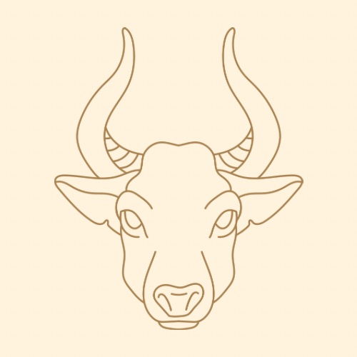

Scroll or select a sign by clicking on the images below to learn more!
Taurus The Bull April 20 - May 20 Tauruses are the human equivalent of moss. A handmade wooden chair. They are normally satisfied with the way things are. They embody stability. Sitting in a patch of grass admiring the breeze. When everything else seems to be falling apart, Tauruses are a rock of dependability in an oasis of calm. Practical knowledge and experience is their modus operandi. Tauruses are oriented around the physical world. They tend to be grounded and logical. They love routine and they’re committed to their own comfort. They like to be in control. They’re patient and steady, and their materialism is an extension of their pursuit of stability. Once they get into a groove, it’s difficult for them to get out of it. Object in motion stays in motion. Object at rest stays at rest. Appreciative of beauty. Attuned to physical pleasure. They like things to be predictable. They are perfectly happy eating the same meal over and over, or wearing the same outfit for a week straight. They would prefer things be consistent than chaotically good. They like to discover what they have the most fun doing, and then do it to the extreme. Tauruses have a regal quality about them. They are graceful and diligent laborers. They can be stubborn, bull-headed, and set in their ways, but they are also great listeners and very dependable. Tauruses can absolutely go on forever. They are tireless machines. And no matter what someone throws at them, they will inevitably overcome their obstacles because they’ve already prepared for every contingency. They are the hand-built truck that will never break down.
Back to top
virgo The Virgin August 23 - September 22Virgos are known for being perfectionists. They are known for their attention to detail, which helps them find patterns where there are none. At times, Virgos can be finicky and critical to a fault. It’s true that Virgos are very particular, but that doesn’t necessarily mean that they keep neat spaces. Their particularities and habits don’t necessarily line up with traditional views of cleanliness. They could live in what looks like a Tasmanian devil-style dust storm ruin, but still impose a “no shoes in the house” or “no outside clothes on the bed” rule. Maybe their house looks cluttered, but they still know where everything is. Everything has its place. Virgos prefer to exist in organized spaces, but put helping others over their own comfort. A Virgo can become so busy fixing the lives of those around them that they don't put much work into providing for their own needs. Virgos are rarely motivated by their own self-interest. Virgos are also known for being intelligent, but because of their introverted nature they can sometimes have trouble expressing themselves. Talking to them may feel like floating on the surface of existence, and like you never know what they’re thinking and feeling deep inside. Their emphasis on thoughts and ideas can seem like a cover-up for their lack of emotional depth. In reality, they are a fortress unto themselves—the definition of self-containment. Virgos will be endlessly accepting of whatever you have to share, but may not see the value in spontaneously performing a similar excavation of themselves for anyone else.
Back to top
capricorn The Goat December 21 - January 19Capricorns are masters of discipline. The wringing of the hands, the constant reminders, the exacting structure, the ever-increasing goals, the tidal wave of self-criticism that lasts forever. They are the ultimate perfectionists. They can be so absorbed in their own internal monologue that it becomes impossible to get them to look away from themselves. Capricorns are often called “workaholics.” They are incredibly pragmatic. Capricorns are rule followers with a highly developed moral compass. From a young age, it is impressed upon them that their whole sense of worth and meaning is based on their ability to hunker down and force their way to the finish line. Their drive to succeed is a reflection of their fear of failure. The most stressful time in a Capricorn’s life is when they question their own authority. When a Capricorn is in a position of power, they are most stable. When they’re put in a position where they have to cater to someone else’s agenda, they can become a little unhinged. Capricorns collect responsibility. And they always seem to take it all on. Capricorns need to be the one to fix everything. Responsibility is their natural state. They have a “can do” attitude. Capricorns are both the martyrs and the champions. They are the guardians and the judges. The team captains. The chief of chiefs. The general. The leader. But even as they lead the charge, Capricorns can feel like the loneliest people in the world. They wish to be completely self-sufficient, because they are so scared of depending on others.
Back to top
|